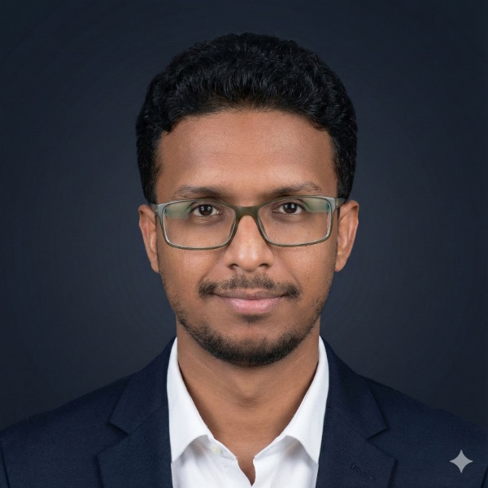

Diplomats or Dead Ends? Rebel Diplomacy, Survival, and Success in Civil Wars
Tests whether diplomatic engagement extends rebel groups' organizational lifespan or accelerates their collapse, using a global dataset of armed non-state actors.
I'm a Ph.D. candidate in Political Science at Western University and a quantitative MENA researcher, working as a crisis analyst with Mercy Corps. My research uses survey experiments, statistical modeling, and field research in Yemen and Lebanon to understand civil war, rebel diplomacy, and the humanitarian consequences of conflict across the Middle East and North Africa.

Hayl Al-Salehi is a crisis analyst, humanitarian researcher, and quantitative MENA researcher based at Western University in London, Ontario. Since 2020 he has worked as a Crisis Analyst with Mercy Corps, producing conflict analysis and early-warning research that informs humanitarian programming in Yemen and across the Middle East and North Africa.
As a quantitative researcher, Hayl works in R, Python, and Stata, applying survey experiments, statistical modeling, and geospatial analysis to questions of civil war, political violence, and post-conflict reintegration. His doctoral research examines rebel diplomacy — when and why armed non-state actors pursue negotiation rather than escalation — combining global conflict datasets with a two-country survey experiment.
His humanitarian and policy work spans roles at Mercy Corps, the Yemen Policy Center, and the Center for Information Resilience, with field research conducted in Yemen and Lebanon. A native Arabic speaker, he supports humanitarian organizations, think tanks, and media with crisis analysis, Yemen and MENA political analysis, and evidence for program design in fragile and conflict-affected settings.
Hayl is available for collaboration, consultation, and commentary as a crisis analyst, humanitarian researcher, and quantitative MENA analyst — including short-term engagements with NGOs, policy organizations, and academic teams.
Tests whether diplomatic engagement extends rebel groups' organizational lifespan or accelerates their collapse, using a global dataset of armed non-state actors.
Examines how organizational capacity and external support shape the choice between diplomacy and military escalation among insurgent groups.
A two-country survey experiment in the United States and Nigeria measuring how citizens evaluate negotiations with armed non-state actors.
Roskoschinski, A., Liang, W., Duan, Y., Al-Salehi, H., Lippke, S., & Welsh, B. Loneliness and depression in older adults with multimorbidity: the role of self-efficacy and social support. Frontiers in Psychiatry.
Equal authorship · doi: 10.3389/fpsyt.2023.1232067
“Diplomats or Dead Ends? Rebel Diplomacy, Survival, and Success in Civil Wars.”
“When Do Rebels Build Embassies? Organizational Capacity, External Support, and the Choice Between Diplomacy and Military Escalation.”
With Blair Welsh
“Talking to Rebels? Public Attitudes Toward Rebel Diplomacy in the United States and Nigeria.”
“Thresholds of Resistance: Repression and the Moral Economy of Violence in Tunisia and Morocco.”
With Blair Welsh
“Repatriation and Reconciliation in Comparison: Former ISIS Collaborators in the Middle East and North Africa.”
With Mirna El Masri and others
Arabic native · English advanced · French beginner · Spanish beginner
R · Python · Stata · QGIS · ArcMap
NVivo · Power BI · Adobe Illustrator · LaTeX · WordPress · Google Suite · MS Office
Public Policy Analysis (LSE) · Google Project Management · New Generation of Social Scientists Fellowship (ACSS)
I'm particularly interested in collaborations on crisis analysis, humanitarian research, Yemen and MENA conflict dynamics, rebel governance, and survey methodology for sensitive political topics. I also take on short consulting and commentary engagements with humanitarian, policy, and media organizations seeking Yemen and MENA expertise.